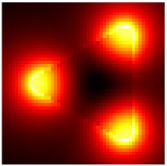

EELS simulation
Simulations of electron energy loss spectroscopy (EELS) can be performed with the MNPBEM toolbox and the electronbeam class.
Contents
Initialization
% initialize electron beam object for EELS simulation
exc = electronbeam( p, impact, width, vel, op, PropertyPair );
In the initialization, the following parameters and properties are used
- p is a comparticle object.
- impact is the impact parameter (x,y) for an electron propagating along the z-direction. If simulations for various impact parameters are requested, as is usually the case for the simulation of EELS maps, impact can also be an array [x1,y1;x2,y2;...].
- width is the transversal extension of the electron beam given in nanometers, which should be chosen smaller than the extension of the boundary elements.
- vel is the electron velocity in units of speed of light. eelsbase.ene2vel allows to convert a kinetic electron energy in eV to the electron velocity in units of the speed of light in vacuum.
- op is the option structure for the MNPBEM simulations.
- 'cutoff' is a parameter given in nanometers that controls over which elements a refined boundary element integration is performed. On default we set cutoff=10*width.
- 'refine' is a parameter that controls the number of integration points for refined boundary element integration.
electronbeam is a wrapper function that selects from the options and property settings one of several classes.
Methods
Once the electronbeam excitation is initialized, one can compute the excitation potentials at the boundary of a comparticle object at a given wavelength enei according to
% compute excitation potentials at the boundary of particle P pot = exc( enei ); % one can also directly use them in the call to a BEM solver sig = bem \ exc( enei );
In addition to excitations, electronbeam also allows to compute the electron energy loss probabilities
% surface and bulk loss probabilites [ psurf, pbulk ] = exc.loss( sig ); % photon loss probability (cathodoluminescence, retarded simulations only) prad = exc.rad( sig );
Tips and tricks
EELS simulations work surprisingly well with the BEM approach. When an electron beam penetrates a boundary element, one can integrate out the divergent parts of the electrodynamic potentials to get an "average" excitation felt by the boundary element. To this end, in our computational approach,
- we introduce a finite width of the electron beam (this avoids difficulties for electron beams penetrating boundary elements close to edges or corners), and
- integrate the potentials over boundary elements that are sufficiently close to the beam.
If EEL maps for electron trajectories penetrating the particle exhibit noisy features, one can try to increase the beam width, increase the number of integration points (see particle integration), or increase the cutoff parameter. The latter points can be done in the options structure through
% increase number of integration points for EELS potentials op = bemoptions( op, 'eels.refine', refine ); % CUTOFF parameter in nanometers op = bemoptions( op, 'eels.cutoff', cutoff );
At present, we have not implemented EELS simulations for layer structures. For thin membranes, as conveniently used in electron microscopy, one can model part of the membrane as a separate particle, as shown in the demo files.
Implementation and literature
In electron energy loss spectroscopy (EELS) an electron with a high kinetic energy (around 100 keV) passes by or penetrates through a metallic nanoparticles, and loses a tiny fraction of its energy by exciting particle plasmons. By raster scanning the beam over the particle and monitoring the loss probability for a given loss energy, one obtains a map of the localized plasmonic fields. The loss probability can be obtained from the work performed by the electron against the induced fields
![$$ \Delta E=e\int {\bf v}\cdot{\bf E}[{\bf r}(t),t]\,dt
=\int_0^\infty\hbar\omega\,\Gamma_{\rm EELS}({\bf R},\omega)\,
d\omega\,. $$](bem_ug_eels_eq06213550642576836017.png)
Here  and
and  are the charge and velocity of the electron, respectively, and
are the charge and velocity of the electron, respectively, and  parameterizes the electron trajectory along the z-direction, with
parameterizes the electron trajectory along the z-direction, with  being the impact parameter. The last equality in the above equation defines the loss probability
being the impact parameter. The last equality in the above equation defines the loss probability  for a given impact parameter and loss energy
for a given impact parameter and loss energy  .
.
- J. Garica de Abajo, Rev. Mod. Phys. 82, 209 (2010).
- U. Hohenester, Comp. Phys. Commun. 185, 1177 (2014).
Example
In the following example we show how to compute EEL maps for a metallic nanotriangle.
% BEM options op = bemoptions( 'sim', 'ret' ); % triangular particle p = tripolygon( round( polygon( 3, 'size', [ 80, 80 * 2 / sqrt( 3 ) ] ) ), edgeprofile( 10 ) ); % make COMPARTICLE object p = comparticle( { epsconst( 1 ), epstable( 'silver.dat' ) }, { p }, [ 2, 1 ], 1, op ); % wavelength (load UNITS for conversion from eV to nm) units; enei = eV2nm ./ 2.13; % mesh for electron beams [ x, y ] = meshgrid( linspace( -70, 50, 50 ), linspace( -60, 60, 50 ) ); % EELS excitation exc = electronbeam( p, [ x( : ), y( : ) ], 0.2, 0.7, op ); % set up BEM solver bem = bemsolver( p, op ); % compute surface charge sig = bem \ exc( enei ); % surface and bulk losses [ psurf, pbulk ] = exc.loss( sig ); % final plot imagesc( reshape( psurf + pbulk, size( x ) ) ); axis equal off colormap hot( 255 );

Copyright 2017 Ulrich Hohenester